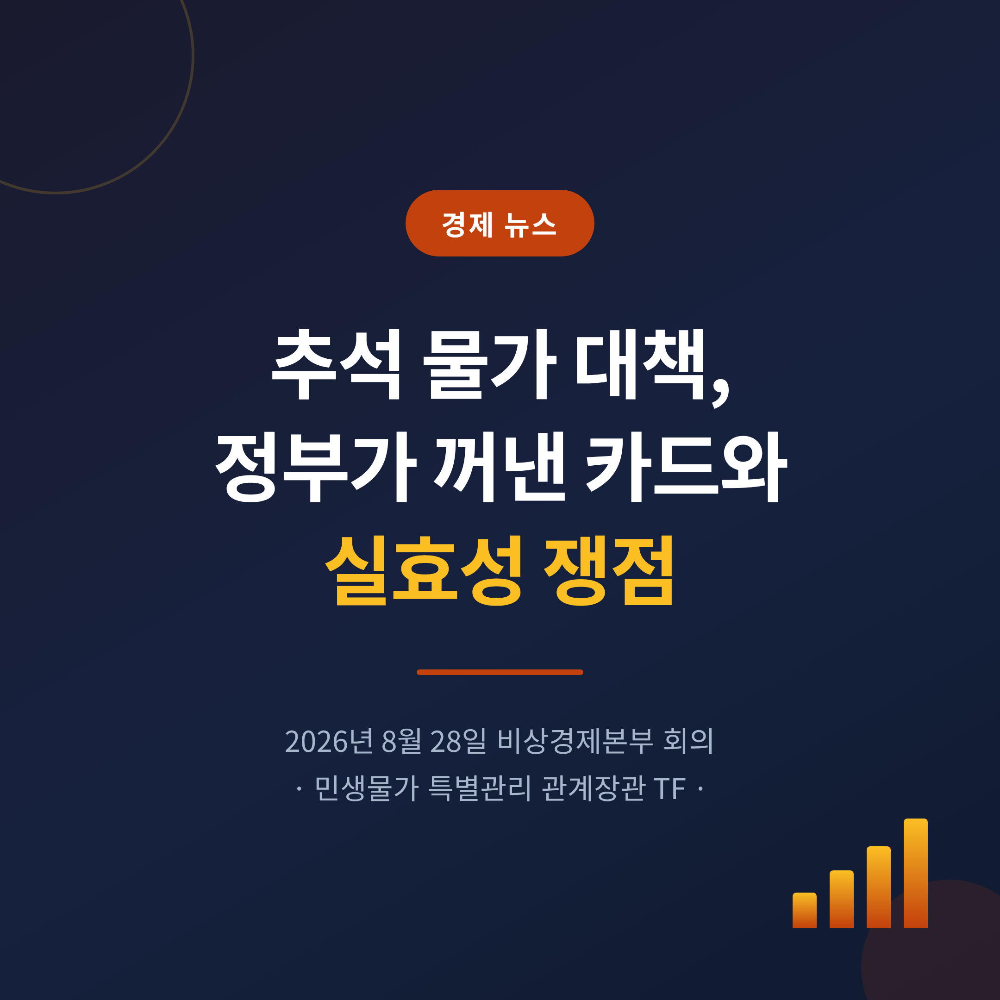
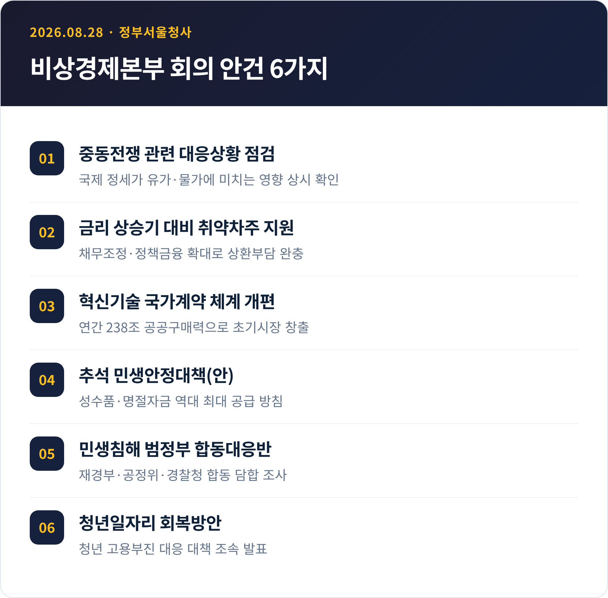
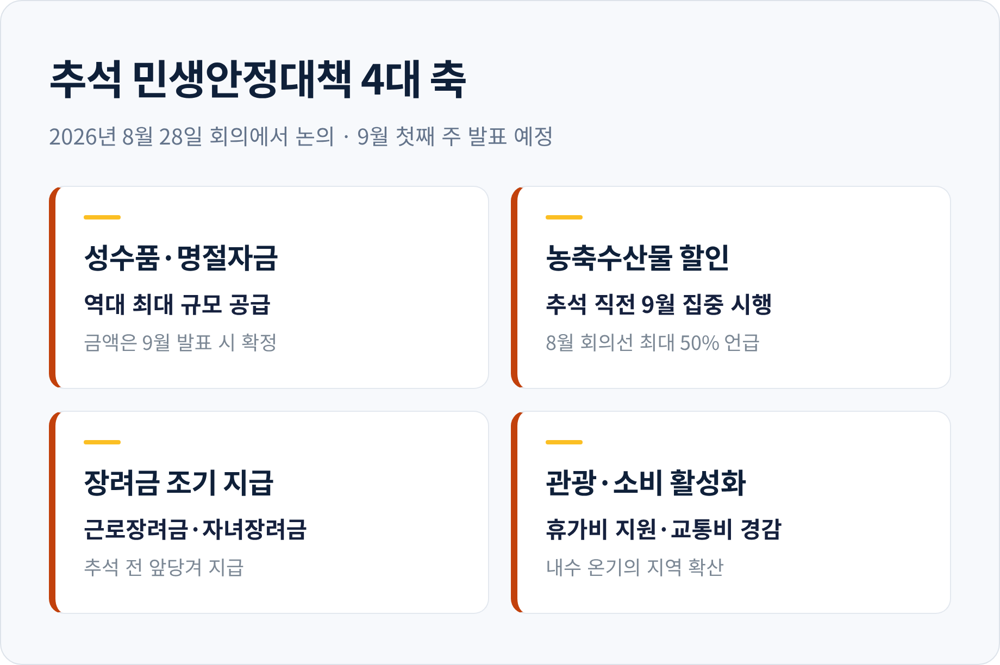
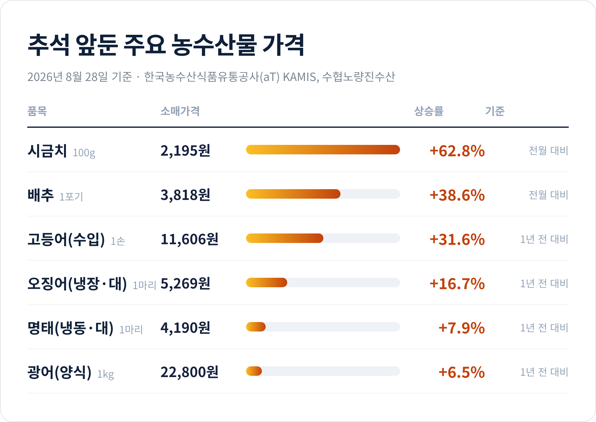
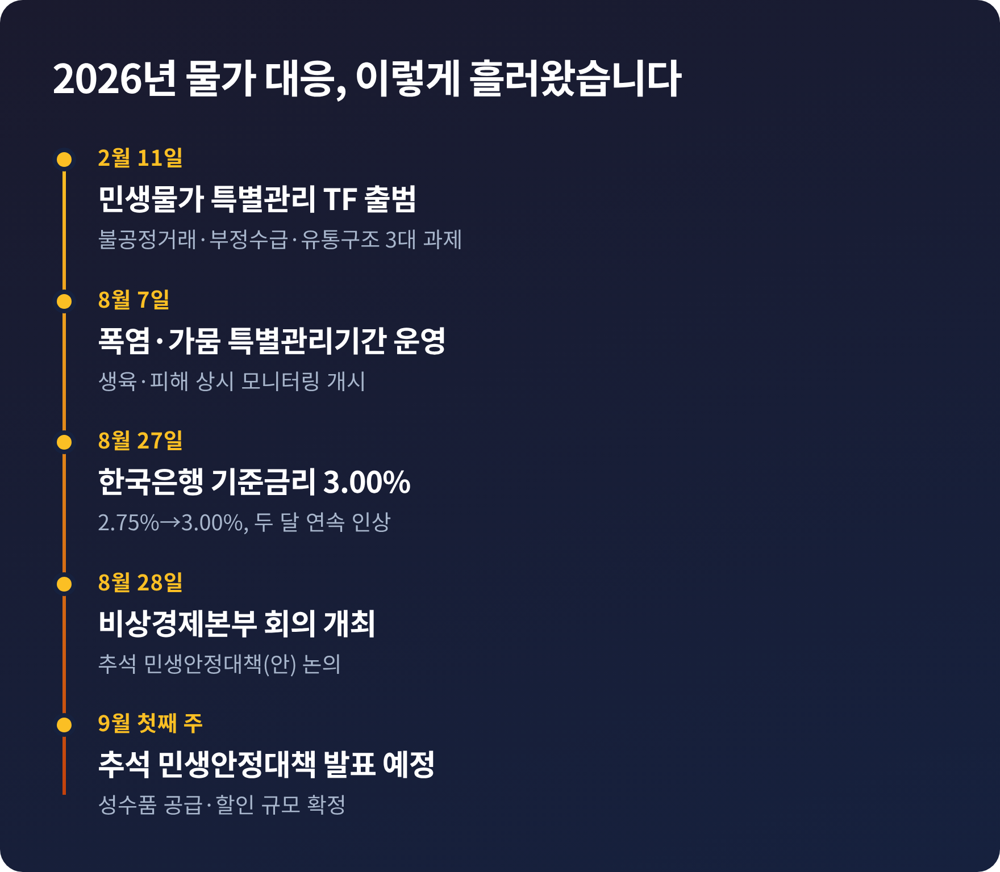
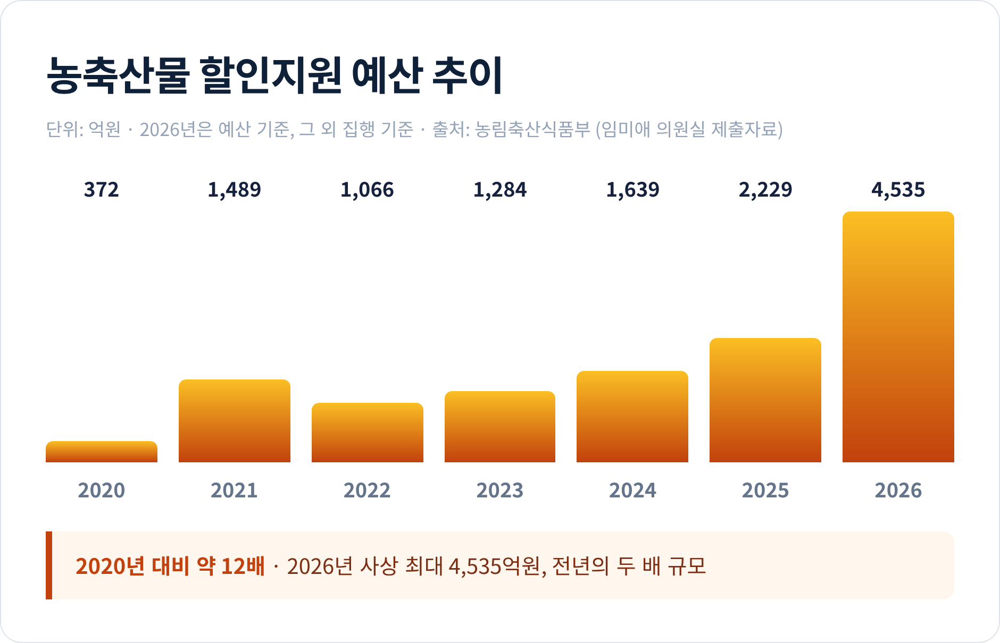
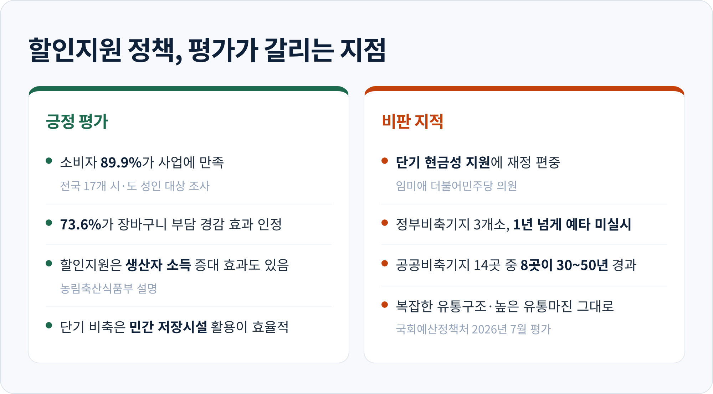

2026년 8월 28일, 정부가 추석을 앞두고 물가 대응 회의를 열었습니다. 다음 주에 발표될 '추석 민생안정대책'의 윤곽도 이날 나왔습니다. 이번 글에서는 그 자리에서 무엇이 결정됐고, 왜 하필 지금이었으며, 어떤 반론이 따라붙는지 정리해 보겠습니다.
구윤철 부총리 겸 재정경제부장관은 8월 28일 오전 8시 30분 정부서울청사에서 회의를 주재했습니다. 이름이 깁니다. 비상경제본부 회의 겸 경제관계장관회의 겸 민생물가 특별관리 관계장관 TF입니다. 세 개의 회의체를 한자리에 묶은 형태입니다.
안건은 여섯 가지였습니다.

구 부총리는 하루 전 발표된 지표부터 언급했습니다. 2분기 가계소득이 전년 동기 대비 4.5% 늘어 12분기 연속 증가했고, 소비지출도 3.4% 증가했다는 내용입니다. 다섯 개 소득분위 전체의 소득이 늘었고, 그중 1분위 증가폭이 가장 컸다고 설명했습니다.
그러고는 이렇게 말했습니다. "민생(民生)이 우리경제의 가장 핵심"이라고요.
이날 논의된 '추석 민생안정대책(안)'의 골자는 네 가지로 압축됩니다.
첫째, 명절 성수품과 명절자금을 역대 최대 규모로 공급합니다. 둘째, 추석 직전인 9월에 농축수산물 할인 행사를 진행합니다. 셋째, 근로장려금과 자녀장려금을 추석 전에 조기 지급합니다. 넷째, 휴가비 지원과 교통비 경감으로 관광·소비를 살립니다.
앞서 8월 13일 회의에서는 배추·무 등 비축물량을 적기에 공급하고, 추석 성수기까지 주요 농축수산물에 최대 50%까지 할인을 지원하겠다는 방향이 제시된 바 있습니다.

같은 회의에서 금융 대책도 나왔습니다. 코로나 시기 금융지원을 받았던 자영업자·소상공인에 대한 적극적 채무조정, 수출입은행 보유 장기 미상환채권 일괄 소각, 햇살론 연간 공급규모 3,000억원 확대(2026년 5.9조원 → 2027년 6.2조원), 청년 미소금융 대출한도 두 배 상향(500만원 → 1,000만원) 등입니다.
여기에 재정경제부·공정거래위원회·경찰청이 참여하는 민생침해 범정부 합동대응반도 즉각 가동합니다. 9월부터 의식주, 생필품·서비스, 교육, 에너지 분야를 순차적으로 훑으며 담합 등 불공정거래를 조사한다는 계획입니다.
정부가 움직인 이유는 통계에 드러납니다.
지표만 보면 물가는 진정되는 흐름이었습니다. 7월 소비자물가지수는 119.77로 전년 동월 대비 2.8% 올랐습니다. 6월 3.2%에서 0.4%포인트 낮아지며 석 달 만에 2%대로 돌아왔습니다. 농축수산물도 0.9% 상승에 그쳤습니다.
문제는 장바구니에서 체감되는 가격이 따로 놀았다는 점입니다.
한국농수산식품유통공사(aT) 집계로 8월 28일 기준 시금치는 100g에 2,195원, 전월 대비 62.8% 급등했습니다. 배추 한 포기는 3,818원으로 38.58% 올랐습니다. 수산물도 마찬가지입니다. 오징어 한 마리가 5,269원으로 1년 전보다 16.67% 뛰었고, 수입산 고등어는 1손에 1만1,606원으로 31.62% 상승했습니다.

원인은 기후입니다. 엽근채소는 30도를 넘으면 생산량이 줄어드는데 올여름은 기록적인 폭염이었습니다. 수산물 쪽은 어획 부진과 고수온 피해가 겹쳤습니다. 지난달 오징어 생산량은 1만2,748톤으로 1년 전보다 28.7% 줄었습니다.
가공식품도 줄줄이 올랐습니다. 농심은 8월 1일부터 43개 브랜드 출고가를 평균 5.8% 인상했고, CJ제일제당은 7월 30일부터 27개 품목을 평균 8% 올렸습니다.
부담은 고르게 나뉘지 않았습니다. 2분기 전체 가구의 월평균 식비는 89만1,000원으로 3.3% 늘었는데, 소득 2분위는 6.9%, 1분위는 6.1% 증가했습니다. 1분위 가구는 전체 지출의 30.3%를 먹는 데 씁니다. 같은 물가라도 누구에게는 더 무겁습니다.
이 대책이 나온 시점에는 또 하나의 배경이 있습니다.
바로 전날인 8월 27일, 한국은행 금융통화위원회가 기준금리를 연 2.75%에서 3.00%로 0.25%포인트 올렸습니다. 7월에 이어 두 달 연속입니다. 연속 인상은 2022년 4월부터 2023년 1월까지 이어진 7회 연속 이후 3년 7개월 만입니다. 금통위는 "선제적 대응을 통해 물가 오름세의 확산을 방지"할 필요를 들었습니다. 다만 황건일 위원은 2.75% 유지 의견을 냈습니다.

한국은행은 8월 30일 보고서에서 한 걸음 더 나아간 경고를 내놨습니다. 반도체 수출 호조가 내수로 번지면 수요 측 물가 압력이 커지고, 근원물가 상승률이 2%대 중반을 넘어서면 품목 간 가격 동조성이 급격히 강해진다는 분석입니다. 한은 조사국 송병호 물가동향팀장은 현재 상황이 과거 수요주도 고근원물가기와 비슷한 측면이 많다고 평가했습니다.
정리하면 이렇습니다. 한쪽에서는 금리를 올려 물가를 누르고, 다른 한쪽에서는 재정을 풀어 명절 부담을 덜어줍니다. 정부가 같은 회의에서 '금리 상승기 대비 취약차주 지원방안'을 함께 다룬 것도 이 긴장을 의식한 결과로 읽힙니다.
이번 대책의 핵심 수단은 할인지원입니다. 정부가 지정한 품목을 유통사가 20~30% 깎아 팔면, 그 차액을 재정으로 메워주는 방식입니다.
규모가 빠르게 커졌습니다. 파이낸셜뉴스가 임미애 더불어민주당 의원실 자료를 인용해 보도한 바에 따르면, 2026년 농축산물 할인지원 예산은 4,535억원입니다. 사상 최대이자 전년의 두 배입니다. 2020년 372억원과 비교하면 약 12배로 불어났습니다. 올해는 처음으로 모든 농축산물 품목이 할인 대상에 들어갔습니다.

여기서 평가가 갈립니다.
비판하는 쪽의 논지는 이렇습니다. 임 의원은 "기후위기 농산물 수급 불안이 일상화되는 상황에서 정부가 단기적인 현금성 할인지원에 재정을 쏟기보다 근본적인 생산·비축 인프라 개선에 예산을 투입해야 한다"고 지적했습니다. 근거도 구체적입니다. 농식품부는 2025년 5월 권역별 정부비축기지 3개소 신축 계획을 내놨지만, 1년 넘게 예비타당성 조사를 진행하지 않았습니다. 현재 공공비축기지 14개소 가운데 8개소는 준공 30~50년이 지나 노후화가 심각합니다. 1개소당 평균 공사비는 약 188억원입니다.
정부 쪽 설명도 있습니다. 농식품부 관계자는 농산물가격안정기금 여건과 민간 저장시설 활용 가능성을 고려했다고 밝혔습니다. 중동발 고물가 탓에 할인지원을 늘렸으며, 할인지원이 생산자 소득을 올리는 효과도 있다는 점을 들었습니다. 노후시설 개보수로 비축 역량을 높이겠다는 계획도 함께 언급했습니다.
소비자 반응은 나쁘지 않습니다. 전국 17개 시·도 성인 대상 조사에서 일반 소비자의 약 89.9%가 사업에 만족한다고 답했고, 73.6%는 장바구니 부담 경감 효과가 있다고 응답했습니다.
구조적 지적도 남습니다. 국회예산정책처는 올해 7월 평가에서 농산물의 복잡한 유통구조와 높은 유통마진, 산지 생산자조직의 취약한 출하 조절 기능을 문제로 짚었습니다. 할인지원은 계산대 앞의 가격을 낮추지만, 그 가격이 만들어지는 경로 자체는 건드리지 못한다는 뜻입니다.

당장은 세 가지 일정이 있습니다.
9월 첫째 주에 추석 민생안정대책이 정식 발표됩니다. 성수품 공급 물량과 예산 총액이 이때 확정됩니다. 8월 28일 시점에서는 "역대 최대"라는 표현만 나왔을 뿐 구체적인 금액은 공개되지 않았습니다.
9월 초에는 8월 소비자물가 통계가 나옵니다. 지난해 통신요금 대규모 할인에 따른 기저효과로 7월보다 높아질 것이라는 관측이 나와 있습니다. 여기에 폭염 피해가 반영되면 체감 물가와 통계 물가의 간극이 다시 도마에 오를 수 있습니다.
9월부터는 담합 조사도 시작됩니다. 다만 조사와 제재는 사후 조치입니다. 추석 전 가격표에 곧바로 반영되기는 어렵습니다.
올해 추석은 9월 25일 금요일입니다. 연휴는 24일부터 27일까지 나흘입니다. 대책이 발표되고 시장에 스며들기까지 남은 시간은 3주 남짓입니다.
민생물가 특별관리 TF는 2026년 2월 11일 출범했습니다. 불공정거래, 정책지원 부정수급, 비효율적 유통구조를 3대 과제로 내걸었습니다. 목표는 "구조적 물가안정 기반"이었습니다. 반년 넘게 지난 지금, 손에 잡히는 결과물은 여전히 할인지원과 성수품 공급이라는 익숙한 조합입니다.
정리하면 이렇습니다.
정부의 이번 대책은 명절을 앞둔 가계의 부담을 실제로 덜어줄 것입니다. 시금치가 62% 오른 상황에서 할인 쿠폰의 체감 효과를 폄하할 이유는 없습니다. 다만 완벽한 처방은 아닙니다. 폭염과 고수온은 내년에도 올 것이고, 그때도 같은 회의가 열릴 가능성이 큽니다.
"물가는 명절마다 잡는 것이 아니라, 명절이 아닐 때 준비하는 것입니다."
이번 추석 대책이 장바구니를 조금 가볍게 만들지 물으신다면, 그렇다고 답하겠습니다. 다만 내년 추석에도 같은 질문을 반복해야 할지는, 지금부터의 선택에 달려 있습니다.
이 글은 공개된 정부 발표와 언론 보도, 통계 자료를 정리한 정보 제공 목적의 글입니다. 특정 자산의 매수·매도를 권유하거나 투자 판단을 대신하지 않으며, 투자 권유가 아닙니다. 투자에 따른 책임은 투자자 본인에게 있습니다.